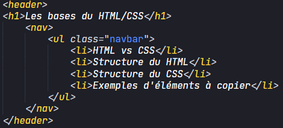

Le HTML et le CSS sont différents de par leur syntaxe et leur utilité. Le HTML va se charger de fournir le contenu, là où le CSS vas seulement le styliser. Ce style va passer par le positionnement, la couleur, etc. Pour bien comprendre la différence je vais vous montrer les deux mêmes éléments sauf que l'un sera constitué à 100% d'HTML et l'autre sera stylisé.
Comme je l'ai dis plus haut le HTML va générer notre contenu, il est donc le coeur de notre page. Pour que notre page soit bien comprises par notre navigateur, la première étape est d'écrire ceci :
<html lang="fr">
<head>
<meta charset="UTF-8">
<title>Ma page web</title>
</head>
<body>
</body>
</html>
Le code que vous voyez à votre gauche se nomme le doctype, il permet de donner des instructions d'interprétations au navigateur. La première ligne signifie au navigateur qu'on écrit du HTML et que le contenu de la page sera en français. La suite se décompose en 2 parties : head et body. Pour faire simple, la partie head n'est pas visible par l'utilisateur (à part le title qui correspond au titre de la page). La partie body recevra tout les éléments "visibles".
Si vous entrez le code ci-dessus vous constaterez aucun changement sur votre page web. Pour en avoir, on va remplir notre body. Il existe une multitude de balises pour des cas différents et précis, c'est pour cela qu'internet sera toujours votre meilleur ami. On va parler des plus communes :
<p>...<p/> : P pour paragraphe, dans cette balise on va écrire notre texte, elle s'accompagnera de l'élement <br/> pour revenir à la ligne<h1>...<h1/> : Cette balise agit exactement de la même manière que P mais sert à indiquer des titres. Il y a une hiérarchie de titre qui va de h1 à h5 (h1 étant le plus grand).<div>...<div/> : Les div s'apparentent à des dossiers, elles permettent de regrouper des parties de code pour leur positionnement par exemple.<section>...<section/> : Les sections sont comme l'indique leur nom des sections, elles agissent un peu de la même manière qu'une div.<ul>...<ul/> : La balise ul permet de créer une listes, les éléments de la liste s'indiquent de cette manière : <li>...<li/><img src="" alt""> : IMG fonctionne différemment d'une balise classique car elle ne nécessite pas de fermeture. Dans les guillemets de src on mettra la lien de l'image (local sur le poste ou hébergé) et dans alt, un texte au cas où l'image ne se chargerait pas.<input value="" type=""> : Input fonctionne avec un type, chaque type aura des arguments différents, les plus connus sont submit pour envoyer un formulaire ou encore text pour créer un champ de texte, il fonctionne souvent aussi avec une value. Par exemple <input value="" type="text"> donnera le résultat suivant : et avec l'argument readonly <input type="text" value="Pas modifiable" readonly> Pour qu'un code soit facilement maintenable à jour et pour éviter un maximum de bug il est vivement reccomandé de l'aérer, l'indenté et de mettre des commentaires. L'indentation la plus simple est de mettre un alinéa à chaque sous-élément. Les commentaires s'écrivent de la manière suivante : <!--...-->
Enfin, une des bases du HTML va être de nommer nos éléments. Cela va être utile d'une part pour se retrouver dans notre code mais aussi plus tard en CSS. Pour cela les deux méthodes les plus utilisées sont l'id et la class. Pour les placer, on les écrit dans n'importe quelle balise de la manière indiquée ci-dessous. La class et l'id se placent de la même manière mais n'ont pas le même rôle. L'id désigne un élément unique alors que la class peut être attribuée à plusieurs éléments.
<p class="notes">...<p/> <img src"" alt"" id="introduction">
Maintenant qu'on a vu les bases du HTML on va parler du CSS. Il peut paraitre un peu compliqué à première vue mais il ne l'est pas tant que ça. Le CSS peut être rédigé de deux manières : dans une balise <style>...</style> dans notre page HTML (pas reccomandé) ou dans un fichier css. Une fois le fichier css créé on le place à un endroit simple par exemple à la racine d'un dossier pour pouvoir y faire appel simplement et avec un nom simple aussi. Imaginons que dans mon dossier Site j'ai ma page index.html et mon fichier styles.css, la ligne de code pour faire appel à notre fichier css sera la suivante : <link rel="stylesheet" href="styles.css">
Maintenant que notre fichier est créé on va pouvoir commencer à élaborer notre CSS. Pour styliser nos éléments, il faut qu'on les sélectionnes. Pour cela 3 principales manières :
L'appel est faite, maintenant plus qu'à styliser. Dans notre exemple on va mettre tout les paragraphes en rouge. Pour se faire on écrit notre code CSS de la manière suivante :
p {
color: red;
}
Le CSS est extrêmement complet et offre des possibilités infinies grâce à des combinaisons plus ou moins exotiques, il et impossible de connaitre tout les éléments en CSS mais je vais en lister quelques un qui sont assez communs.
color: ... ; : il permet de colorer le texte d'un élément, les valeurs acceptées sont le nom des couleurs en anglais, du rgb, rgba et hex.background-color : ... ; : il permet de colorer le fond d'un élément, il accepte les mêmes valeur que color.width: ... ; : il permet de définir une largeur à un élément, et accepte des valeurs px, en pourcentage principalement. Il fonctionne de la même manière que height pour la hauteur.font-size: ... ; : il permet de modifier la taille d'un texte en px, em, pourcentagedisplay: ... ; : il permet de changer le mode d'affichage, il existe en flex, grid, et beaucoup d'autres. Chacun a sa particularité et son utilité mais flex est le plus utilisé.